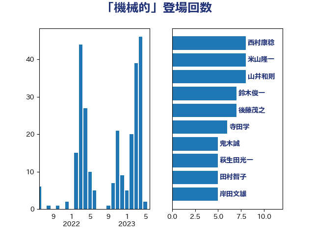

単語「機械的」

| 西村康稔 | 自由民主党 | 8 回 |
| 米山隆一 | 立憲民主党 | 8 回 |
| 山井和則 | 立憲民主党 | 8 回 |
| 鈴木俊一 | 自由民主党 | 7 回 |
| 後藤茂之 | 自由民主党 | 7 回 |
| 寺田学 | 立憲民主党 | 6 回 |
| 鬼木誠 | 立憲民主党 | 5 回 |
| 萩生田光一 | 自由民主党 | 5 回 |
| 田村智子 | 日本共産党 | 5 回 |
| 岸田文雄 | 自由民主党 | 5 回 |
| 宮本徹 | 日本共産党 | 5 回 |
| 加藤勝信 | 自由民主党 | 5 回 |
| 穀田恵二 | 日本共産党 | 3 回 |
| 秋野公造 | 公明党 | 3 回 |
| 末松信介 | 自由民主党 | 3 回 |
| 倉林明子 | 日本共産党 | 3 回 |
| 齋藤健 | 自由民主党 | 2 回 |
| 高見康裕 | 自由民主党 | 2 回 |
| 笠井亮 | 日本共産党 | 2 回 |
| 福島伸享 | 無所属 | 2 回 |
| 石川香織 | 立憲民主党 | 2 回 |
| 田村貴昭 | 日本共産党 | 2 回 |
| 森山浩行 | 立憲民主党 | 2 回 |
| 早稲田ゆき | 立憲民主党 | 2 回 |
| 打越さく良 | 立憲民主党 | 2 回 |
| 小倉將信 | 自由民主党 | 2 回 |
| 堤かなめ | 立憲民主党 | 2 回 |
| 吉良よし子 | 日本共産党 | 2 回 |
| 吉田とも代 | 日本維新の会 | 2 回 |
| 伊藤孝江 | 公明党 | 2 回 |
| 高橋千鶴子 | 日本共産党 | 1 回 |
| 高橋光男 | 公明党 | 1 回 |
| 高木啓 | 自由民主党 | 1 回 |
| 高木かおり | 日本維新の会 | 1 回 |
| 鎌田さゆり | 立憲民主党 | 1 回 |
| 道下大樹 | 立憲民主党 | 1 回 |
| 藤岡隆雄 | 立憲民主党 | 1 回 |
| 葉梨康弘 | 自由民主党 | 1 回 |
| 茂木敏充 | 自由民主党 | 1 回 |
| 芳賀道也 | 国民民主党 | 1 回 |
| 舟山康江 | 国民民主党 | 1 回 |
| 稲富修二 | 立憲民主党 | 1 回 |
| 秋本真利 | 自由民主党 | 1 回 |
| 石川大我 | 立憲民主党 | 1 回 |
| 石垣のりこ | 立憲民主党 | 1 回 |
| 畦元将吾 | 自由民主党 | 1 回 |
| 田村まみ | 国民民主党 | 1 回 |
| 玉木雄一郎 | 国民民主党 | 1 回 |
| 片山さつき | 自由民主党 | 1 回 |
| 滝波宏文 | 自由民主党 | 1 回 |
| 浜田靖一 | 自由民主党 | 1 回 |
| 森屋隆 | 立憲民主党 | 1 回 |
| 梅谷守 | 立憲民主党 | 1 回 |
| 松本剛明 | 自由民主党 | 1 回 |
| 東徹 | 日本維新の会 | 1 回 |
| 斎藤洋明 | 自由民主党 | 1 回 |
| 斎藤アレックス | 国民民主党 | 1 回 |
| 平木大作 | 公明党 | 1 回 |
| 岩谷良平 | 日本維新の会 | 1 回 |
| 岩田和親 | 自由民主党 | 1 回 |
| 岡田直樹 | 自由民主党 | 1 回 |
| 山際大志郎 | 自由民主党 | 1 回 |
| 山田勝彦 | 立憲民主党 | 1 回 |
| 山本太郎 | れいわ新選組 | 1 回 |
| 山下芳生 | 日本共産党 | 1 回 |
| 小熊慎司 | 立憲民主党 | 1 回 |
| 小沼巧 | 立憲民主党 | 1 回 |
| 小池晃 | 日本共産党 | 1 回 |
| 小林鷹之 | 自由民主党 | 1 回 |
| 寺田稔 | 自由民主党 | 1 回 |
| 大島九州男 | れいわ新選組 | 1 回 |
| 大串博志 | 立憲民主党 | 1 回 |
| 吉田統彦 | 立憲民主党 | 1 回 |
| 前川清成 | 日本維新の会 | 1 回 |
| 伊波洋一 | 無所属 | 1 回 |
| 仁木博文 | 無所属 | 1 回 |
| 井上哲士 | 日本共産党 | 1 回 |
| 串田誠一 | 日本維新の会 | 1 回 |
| 中川貴元 | 自由民主党 | 1 回 |
| 三木圭恵 | 日本維新の会 | 1 回 |
| ながえ孝子 | 無所属 | 1 回 |
| たがや亮 | れいわ新選組 | 1 回 |